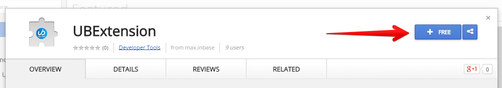
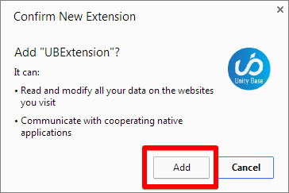
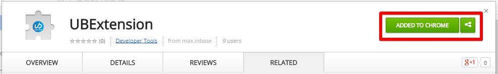
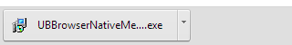
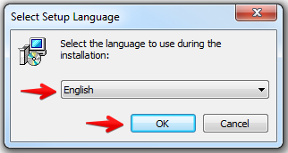
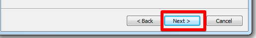

Барномаи ҳатмӣ:
Барои минбаъд бо нармафзор кор намудан ҳатман бояд Google Chrome – ро насб намуд.
Насби иловагӣ
- Барои насби иловагӣ ба ишораи UnityBase extension, гузаред.
- Чи тавре дар тасвир нишон дода шудааст тугмаи +Free – ро, зер кунед: 
- Чи тавре дар тасвир нишон дода шудааст, хоҳиши худро оиди насби иловагӣ тасдиқ кунед: 
- Чи тавре дар тасвир нишон дода шудааст, ба анҷоми бобарори насби иловагӣ боварӣ ҳосил намоед:
- Барои насби афзоӣ (плагин) ба ишораи UnityBase plugin, гузаред. Дар қисми поёнии Google chrome барномаи боршаванда пайдо мешавад: 
- Ин тугмаро барои оғози барномаи насби афзоӣ пахш намоед.
- Аз рӯйхат забони насбро интихоб намоед ва барои идома тугмаи ОК-ро пахш намоед:
- Минбаъд, дар тамоми равзана тугмаи “Next”–ро пахш намоед.
Маълумотҳои иловагӣ
- Иловагиро бо даромадан ба саҳифа идора намоед: Маълумоти бештар дар бораи идоракунии иловагӣ.
- Иловагиро бо дароман ба саҳифа нобуд созед: Маълумоти бештар дар бораи нобудкунии иловагӣ.